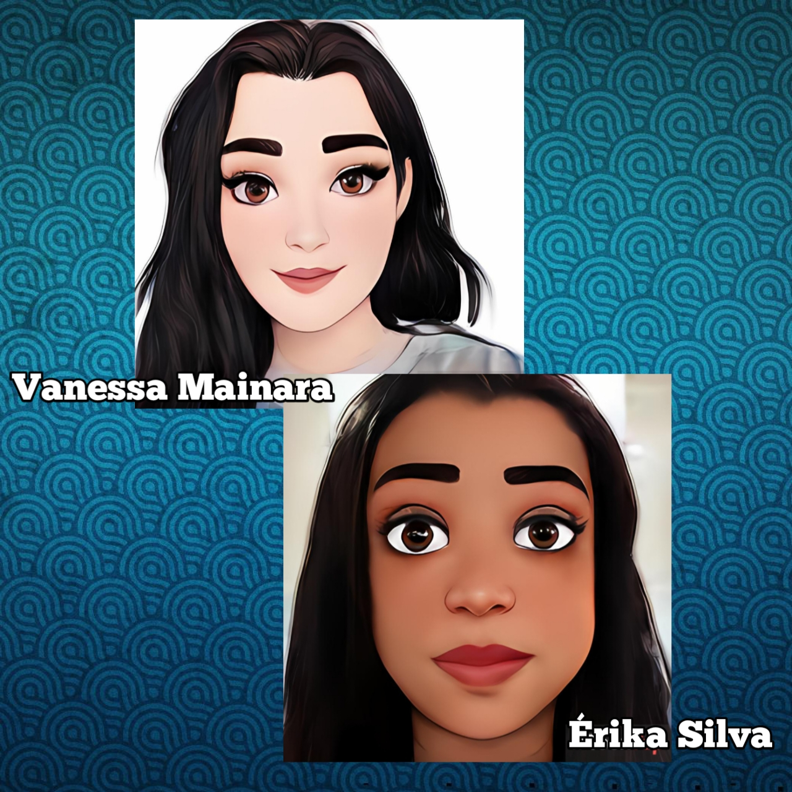

Minha trajetória

Elas na Tech é um projeto criado, desenvolvido e pensado para agregar mulheres no mundo da tecnologia com bolsa de estudo 100% gratuita e online.
O projeto mostra que ao contrário do que a maioria das pessoas sabem, a tecnologia contou com a participação de muitas mulheres para ser desenvolvido.
Todos esses nomes são muito importantes na tecnolgia, mulheres fortes que deixaram seu legado, porém, o mundo é injusto e não mostra essa parte da história como merece ser divulgada.
E com o Elas na Tech foi mostrado a importância da mulher na tecnologia. Além de dar oportunidade para que todas aquelas que queiram fazer parte do mudo de desenvolvimento.
Sendo uma área tão complexa e dominada por homens, esse projeto veio para quebrar esse tabú e mostrar que as mulheres podem ser tão capazes de se tornarem desenvolvedoras como os homens.
Assim, a formação de profíssionais do projeto é de mulheres, que dedicam o seu tempo e compartilham os seus conhecimentos para que tenham o máximo de graduadas e diplomadas, entrando na área da tecnologia.
Professoas:
Juliana Ribeiro - Cybelle Morais- Gil Chaves
Monitoras:
Vanessa Mainara - Érika Silva
Gestão:
Amanda Cornélio - Lethycya Lima
Aulões:
Além de todas as convidadas lindas e maravilhosas , que participaram dos aulões, falando de suas tragetorias, dando dicas e compartilhando conhecimentos.
O mais interessante desse projeto é que não há seleção de testes para identificar a melhor ou a menos capacitada e apesar de ter um número certo de bolsas de estudo disponível, todas são aceitas e ninguém fica de fora.
O projeto Elas na Tech tem como objetivo, resgatar e incluir as mulheres no mercado de trabalho além de apoiar as transições de carreiras profíssionais com o intuito de colaborar, oferecendo conteúdo, conhecimento e técnicas de desenvolvimento na programação TI.
Com o método de ensino desenvolvido por um grupo de professoras especializadas, o que parecia ser difícil aprender, se tornou fácil e dinâmico, pois se mostram capazes e enficientes além de usarem conteúdos que facilitam no aprendizado.
Cada professora com sua particularidade.
As monitoras, por sua vez, estão sempre dispostas a atender a necessidade de cada aluna, orientando e solucionando suas dúvidas. Elas praticamente "seguram nas mãos" e só soltam quando o objetivo é atingido e a aluna entendeu o conteúdo.
Com a comunicação, visando a integração, há "aulões" que incentivam e encorajam as alunas a continuar e seguir em frente, dando engajamento e proporcionando momentos de esclarecimentos sobre ser uma desenvolvedora em programação TI.
Esses momentos são extremamente importantes para que mostrem o quanto as mulheres podem ser aceitas e inclusas em diversas áreas de empregabilidades dando de fato o reconhecimento e a valorização em seus feitos.
Enfim, o projeto Elas na Tech, é a oportunidade de explorar, agregar conhecimento e atingir objetivos que na grande maioria das vezes muitas mulheres não têm oportunidade de buscar de outras formas.
Essas bolsas de estudos gratuitas são a volta por cima de muitas mulheres que não tiveram chances de crescer e ter sua vida profíssional valorizada.
Elas na Tech devolveu essa oportunidade para todas essas mulheres que estão prestes a se formar e receber seus diplomas.
Minha trajetória